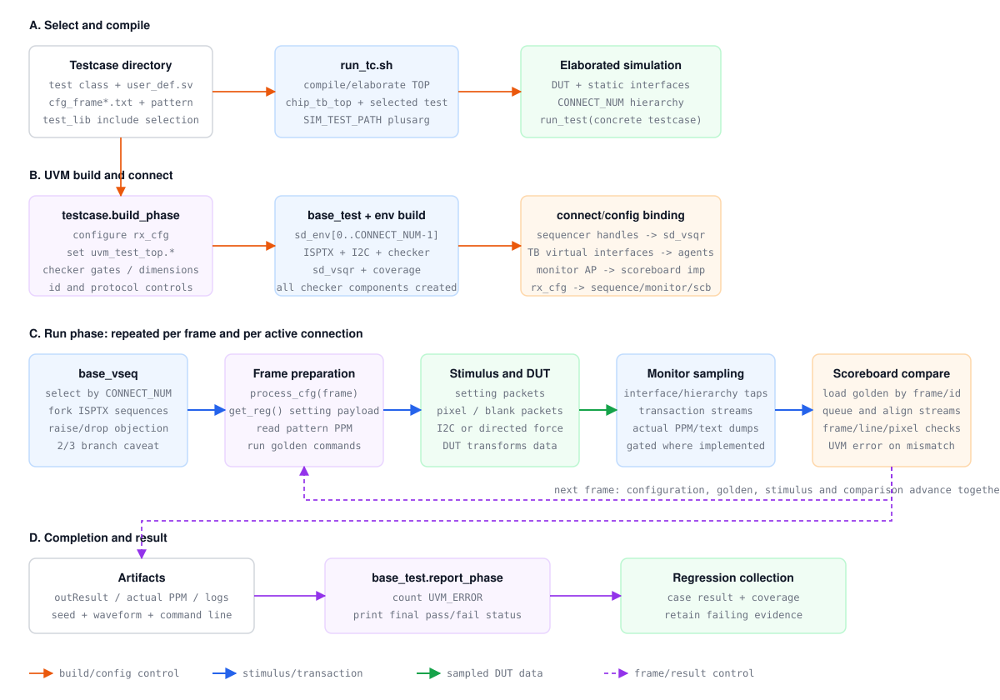
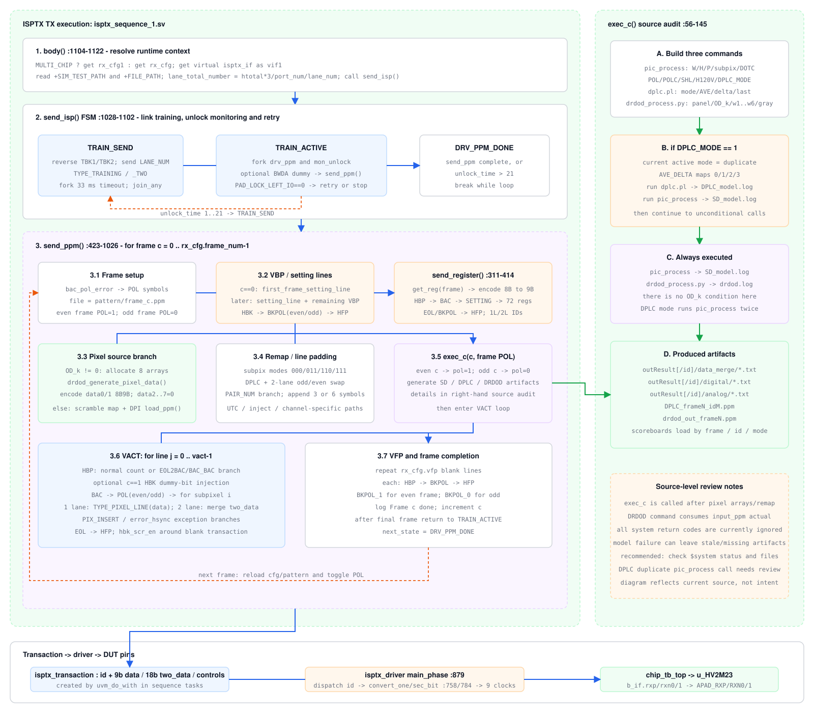
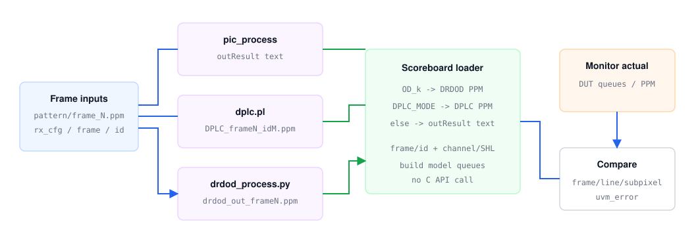
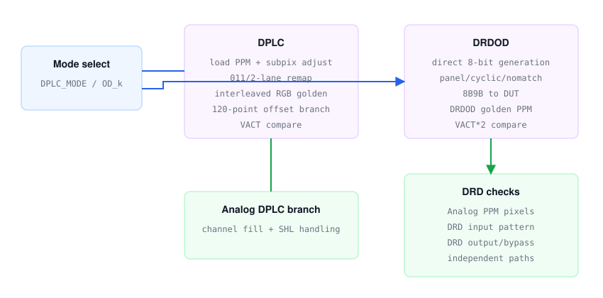
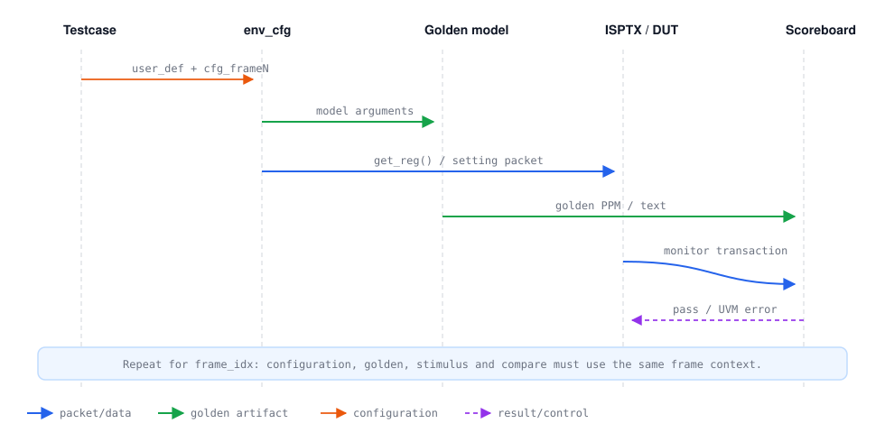

每帧执行顺序
- 读取 case 资产。
user_def.sv决定静态宏，cfg_frameN.txt由 env_cfg 的process_cfg()解析。 - 生成寄存器 payload。
get_reg()将当前 frame 配置打包，send_register()发送 setting line。 - 运行 golden。 sequence 调用
pic_process；DRDOD 调用drdod_process.py；DPLC 调用当前环境内的dplc.pl。 - 发送 pixel stream。 从
pattern/frame_N.ppm读取 P3 数据，按协议插入 blank、setting 与异常注入。 - 采样与比较。 monitor 输出 transaction/PPM，scoreboard 按 frame 和输出通道加载 golden。

ISPTX Sequence 到 DUT 的具体链路
| 阶段 | 实际动作 | 源码位置 |
|---|---|---|
| 启动 sequence | base_vseq 将 isptx_sequence[_1..3] 启动在对应 p_isptx_sqrN；body() 取得 rx_cfg、vif、SIM_TEST_PATH 和 FILE_PATH 后调用 send_isp()。 | base_vseq.svisptx_sequence_1.sv:1104 |
| 链路训练 | send_isp() 先发送 LANE_NUM transaction；1 lane 使用 TYPE_TRAINING，2 lane 使用 TYPE_TRAINING_TWO，并与 33 ms timeout 并行。 | isptx_sequence_1.sv:1028 |
| 逐帧组包 | TRAIN_ACTIVE 调用 send_ppm()。每帧按 VBP setting/blank、VACT 的 HBP/BAC+POL/pixel/EOL/HFP、VFP 顺序创建 transaction；unlock monitor 与发送线程并行。 | isptx_sequence_1.sv:423 |
| sequencer/driver | agent 将 driver seq_item_port 接到 sequencer export。driver 用 get_next_item() 取 transaction，按 id 分派 task，完成后调用 item_done()。 | isptx_agent.svisptx_driver.sv |
| bit-level 驱动 | 单 lane pixel 驱动 lane0，双 lane pixel 并行驱动 lane0/lane1。每个 9-bit symbol 在 9 个时钟上驱动差分 rxpN/rxnN；定向 case 可切到 tx_clk_modify。 | convert_one_bit()convert_sec_bit() |
transaction 不是整帧：
isptx_transaction.id 区分 LANE_NUM、TRAINING、REGISTER、HBK、BAC、POL、EOL、PIXEL 和异常 dummy。sequence 决定协议顺序与内容，driver 负责转换为引脚时序。帧内协议与失锁恢复
TRAIN_SEND -> TYPE_TRAINING / TYPE_TRAINING_TWO -> wait LOCK
TRAIN_ACTIVE -> setting in VBP
-> [HBP -> BAC+POL -> pixel -> EOL -> HFP] x VACT
-> VFP
|| monitor PAD_LOCK_LEFT_IO == 0
unlock -> TRAIN_SEND; frames done -> DRV_PPM_DONE当前源码中的模型命令
pic_process ... -W HACT -H VACT -P PORT_NUM -r subpix_reg \
-D DOTC -O pol -C POLC -S SHL -HV H120V -L DPLC_MODE
drdod_process.py ... --drd_panel DRD_PANEL --od_k OD_k \
--od_w1 ... --od_w6 ... --od_gray OD_gray
dplc.pl --input ... --mode ... --ave_r ... --ave_g ... \
--ave_b ... --delta ... --ave_last ...
CModel 生成 Golden 与 Checker 调用
- 输入一致。sequence 使用当前 frame 的
pattern/frame_N.ppm和同一份 rx_cfg 构造模型命令。 - 普通 golden。
pic_process输出到单芯片outResult或多芯片outResult1，包含 Data Merge、Digital Top 和 Analog 层结果。 - 特殊 golden。DPLC 生成
DPLC_frameN_idM.ppm；DRDOD 从input_ppm/drv_M_frame_N.ppm生成drdod_out_frameN.ppm。 - checker 加载。scoreboard 不调用 C API，而是读取模型文件。Analog scoreboard 的
get_cmodel()按 OD_k、DPLC_MODE 和普通模式选择输入。 - 逐层比较。monitor transaction 形成 actual queue/PPM，scoreboard 按 frame/id、行和 subpixel 比较并报告 UVM error。
| 模式 | Golden 文件 | Analog checker 行为 |
|---|---|---|
| 普通 | outResult/analog/frame_N_analogM.txt多芯片为 outResultM/... | 逐行解析空格分隔 subpixel，形成 model frame queue。 |
| DPLC | DPLC_frameN_idM.ppm | 读取 P3 PPM；关闭 channel 填 8'h22，SHL=0 时反转行。 |
| DRDOD | drdod_out_frameN.ppm | 读取 VACT*2 行；关闭 channel 填 8'h22，再与 analog DUT 输出比较。 |

DPLC 与 DRDOD 特殊处理
DPLC
DPLC_MODE==1时运行 dplc.pl；当前源码把 mode 固定为 duplicate，并传 AVE_R/G/B、AVE_DELTA 和 AVE_LAST。- load_ppm 后调整 subpix_num；特定 subpix_reg=011、2 lane 路径会重排奇偶行和 pair 数据。
- write_ppm 在 DPLC 模式交错写入两组 RGB，checker 改读 DPLC PPM。
- Analog compare 对 subpix_reg=0 的 DPLC 分支存在 120 点偏移。
DRDOD
OD_k != 0时由drdod_generate_pixel_data()按 DRD_PANEL、PAIR_NUM、CYCLIC/NOMATCH 直接构造 8-bit 数据并做 8B9B encode。- 送入 DUT 的 decoded 数据写到 input_ppm，供 drdod_process.py 生成 golden。
- Analog checker 行数由 VACT 变为 VACT*2，并读取 DRDOD PPM。
- DRD input/output monitor 与 scoreboard 是独立检查链，验证 panel gate、输入模式和 output/bypass。

Case 资产清单
| 资产 | 用途 | 常见错误 |
|---|---|---|
user_def.sv | 静态尺寸、pair/port、帧数和功能宏 | 从其他 case 复制后未同步 HACT/VACT 或 CHIP_SEL |
cfg_frame*.txt | 每帧寄存器字段 | 文件数与 FRAME_NUM/复用规则不一致 |
pattern/frame_N.ppm | 像素输入 | 宽高、P3 header、通道排列不匹配 |
| test class | checker 开关、force、I2C 和异常注入 | 关闭 checker 后只看波形，没有自动判定 |
Golden 产物核对
- 先从日志确认实际执行的命令行和参数，不凭文档猜测。
- 确认输出文件的修改时间属于本次 seed，防止读到旧产物。
- 确认 frame、pair、odd/even、left/right 命名与 scoreboard 加载路径一致。
- 模型报错或输出为空应直接使 case fail，不能继续比较空文件。